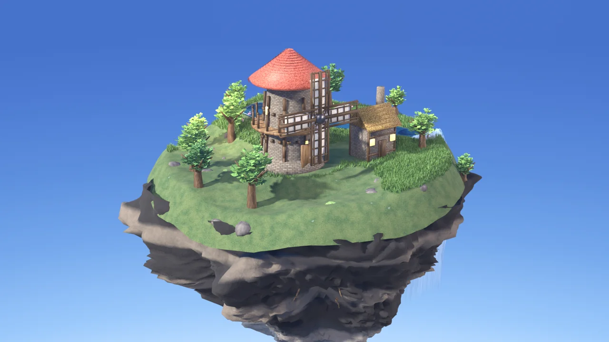
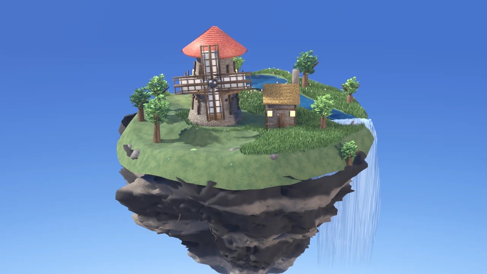
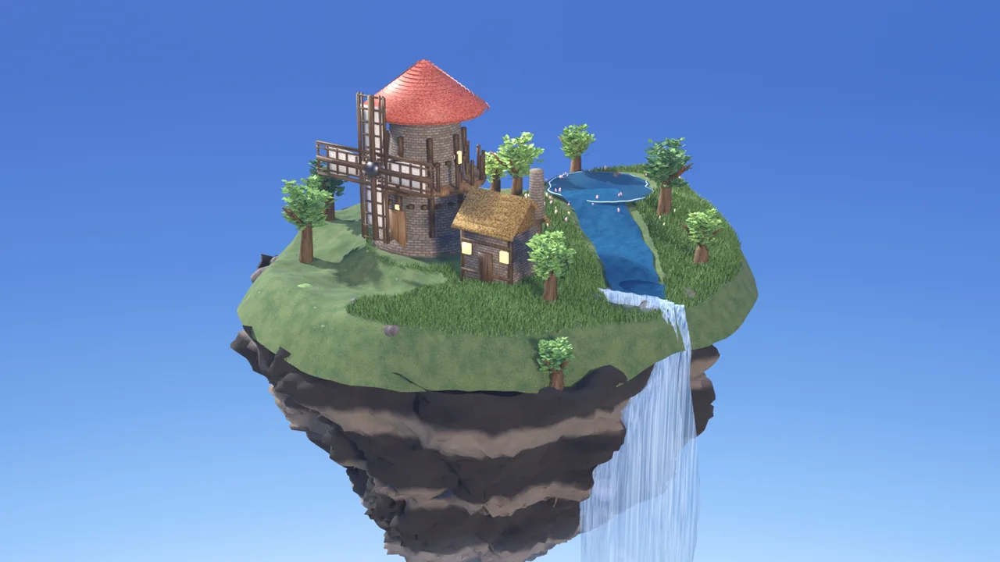
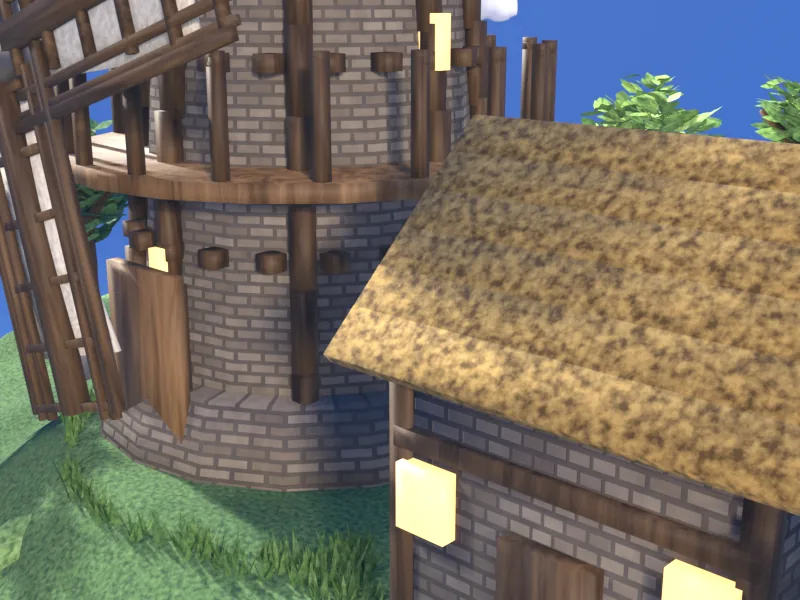
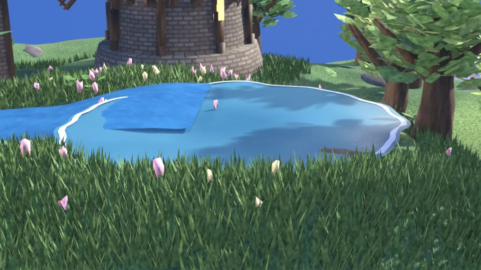
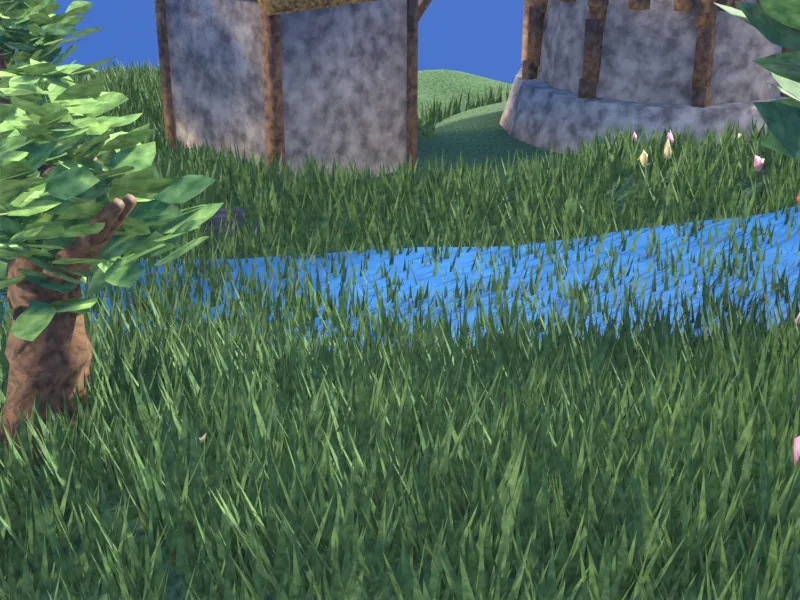
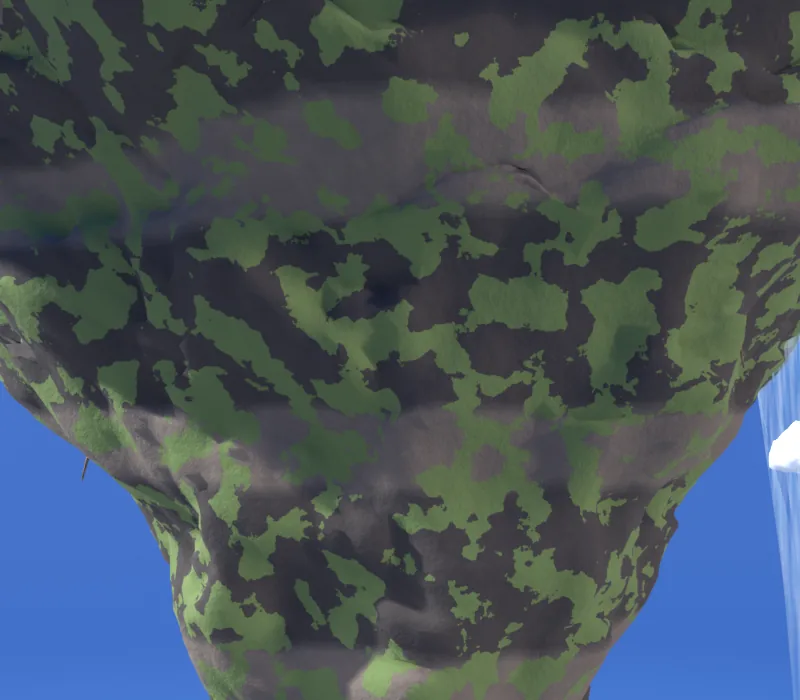

没有一张贴图、没有一个外部模型。整座浮岛、风车、木屋、溪流与瀑布，全部由 Python 逐顶点、逐节点生成。
整座浮岛不只是视频 —— 下面是可以直接拖动的实时 3D 场景。整套程序化材质先烘焙成逐顶点颜色，再压成 5.4 MB 的 Draco GLB，由 three.js 在浏览器里即时渲染，无后端、无 CDN。
相机沿一段 8 秒弧线绕岛半周，从左侧 3/4 视角转到右侧，露出背面的池塘与瀑布。



砖塔的错缝砌法、池水的径向深浅、溪流的流向泡沫、岛底的水平层理 —— 都是着色器里算出来的，不是画的。




整套场景由一个 86 KB 的 Python 脚本从零构建，改一个数字就能重跑。
| 模块 | 实现方式 |
|---|---|
| 浮岛地形 | 径向高度场 + 多频噪声扰动，池塘与河道是挖出来的凹坑，不是贴上去的圆片 |
| 岛底岩体 | 84 圈环带放样，四层噪声叠加角度相位漂移形成水平层理与扶壁，底部收口成圆钝巨石 |
| 风车 | 圆柱砖塔 + 圆锥瓦顶 + 四叶木格扇面，叶片带旋转关键帧 |
| 水体 | 风格化自发光液体：近关闭镜面反射，靠 ColorRamp 驱动自发光，避免反射天空变白 |
| 瀑布 | 三层透明水膜叠加，沿 Z 拉长的噪声做下落纹理，上下端 alpha 淡出 |
| 植被 | 22 000 片草叶为三角面片，10 棵树用黄金角分布 9 簇叶卡堆冠 |
| 天空 | 世界着色器按视线 Z 分量做 9 段色带渐变，从地平线暖白过渡到天顶深蓝 |
| 云 | 二十面球噪声位移 + Remesh(Voxel) + Smooth 融合，按法线朝向分冷暖两面 |
写这篇的时候真正卡住的地方，记下来免得下次再踩。